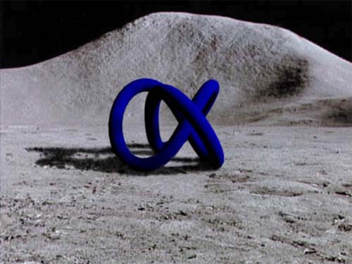
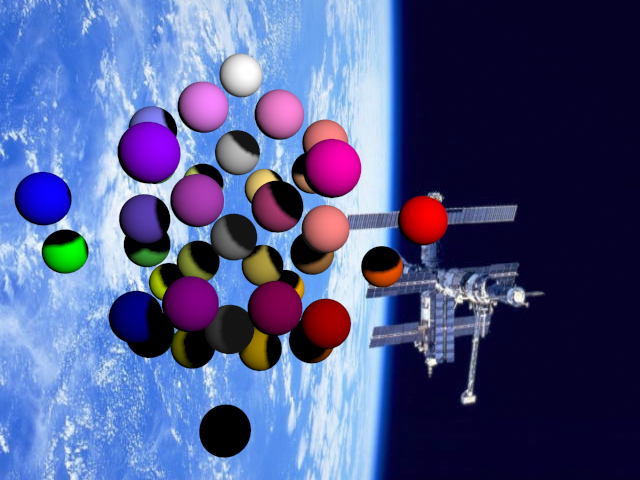
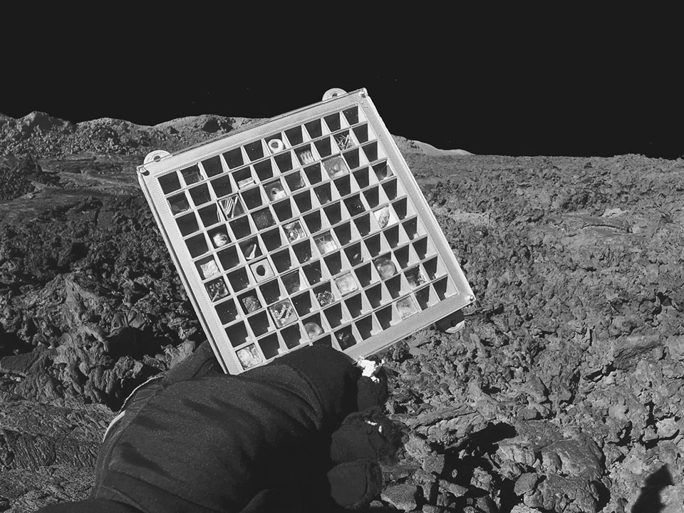
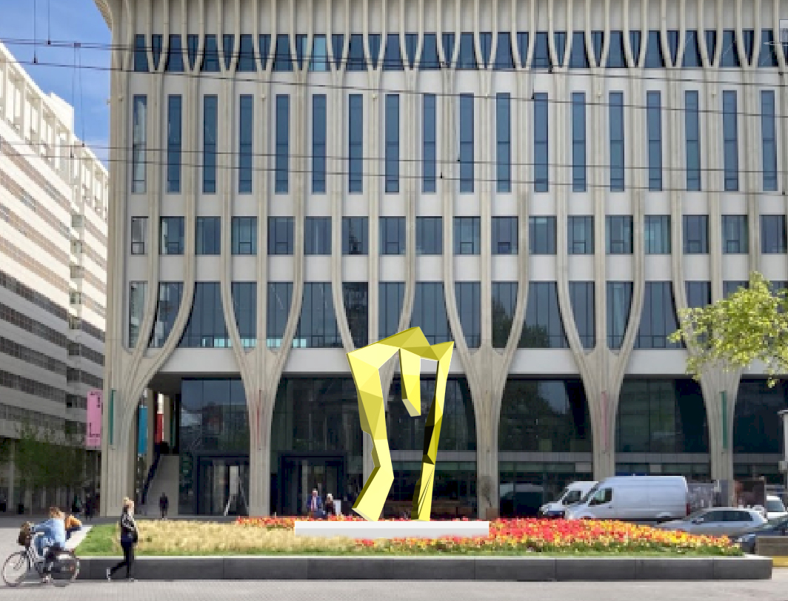
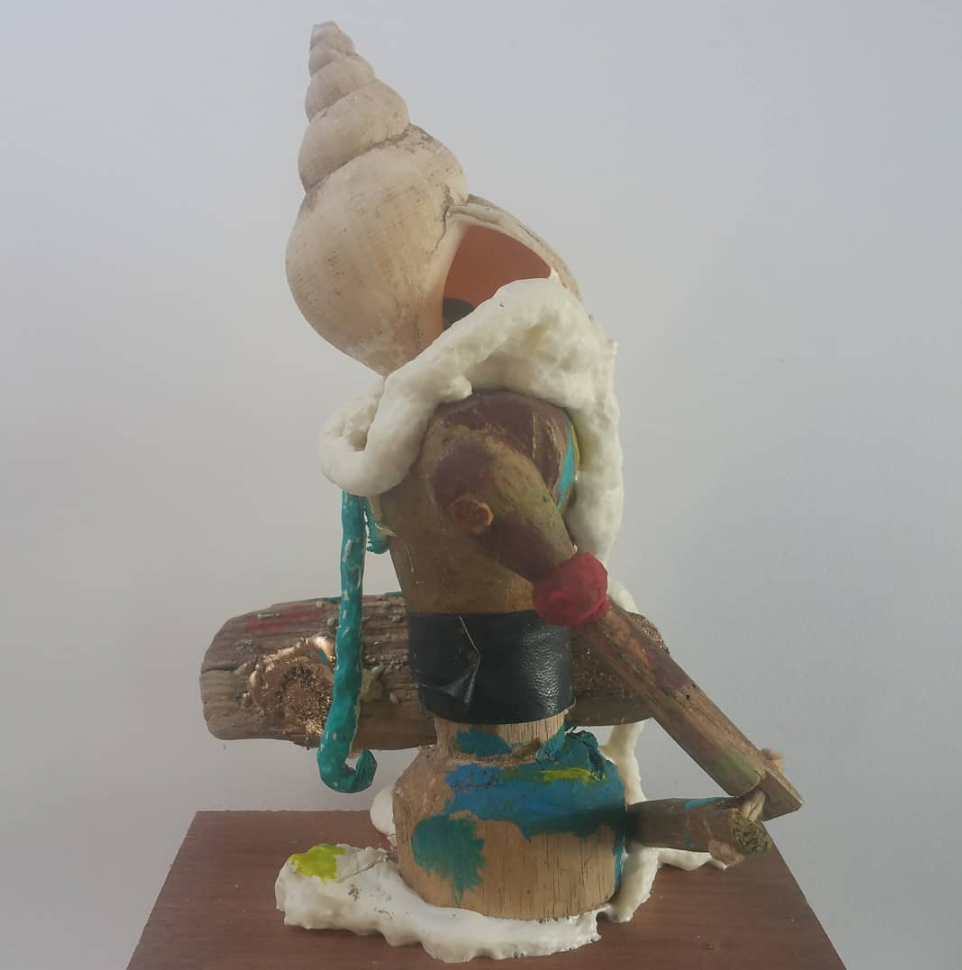
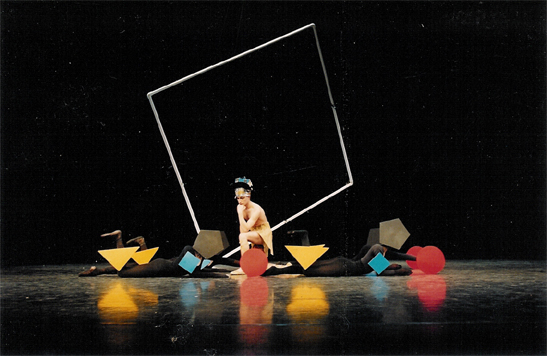
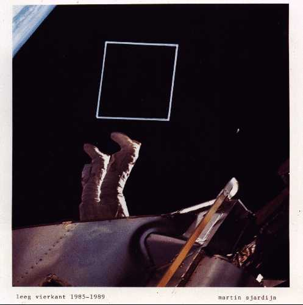
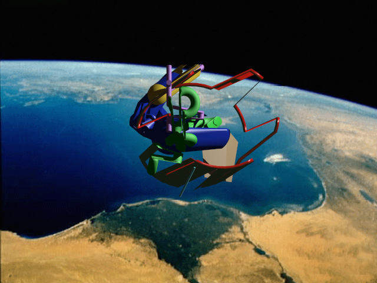
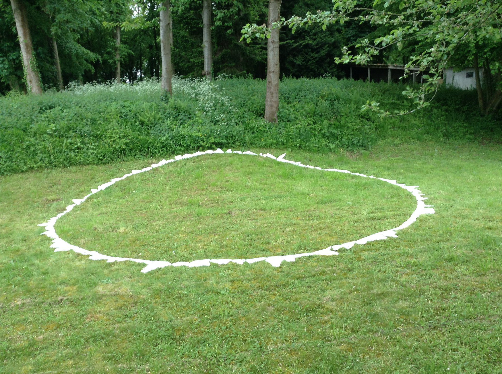

MARTIN SJARDIJN SCULPTURES

Blue Knot on the Moon 1994
Ruimtelijk Kleursysteem 1993
Grid for the Moon Project with BlackBox BlackBox on the Moon with A Line in Outer Space 1985
BlackBox on the Moon with A Line in Outer Space 1985

Voorstel voor een sculptuur bij het AMARE gebouw Den Haag 2020
Sculptuur met wasknijpers en schelp 2020
Ballet Leeg Vierkant - Koninklijk Conservatorium
Leeg Vierkant 1986
Series Weightless Sculptures 1993
Sculptuur Binenn/Buiten Frévent (Fr) 2018 - Scherven Wit Marmer
Sculptures
Sculptures
Sculptures
Sculptures
Sculptures
Sculptures
Sculptures
Sculptures
Sculptures
Sculptures